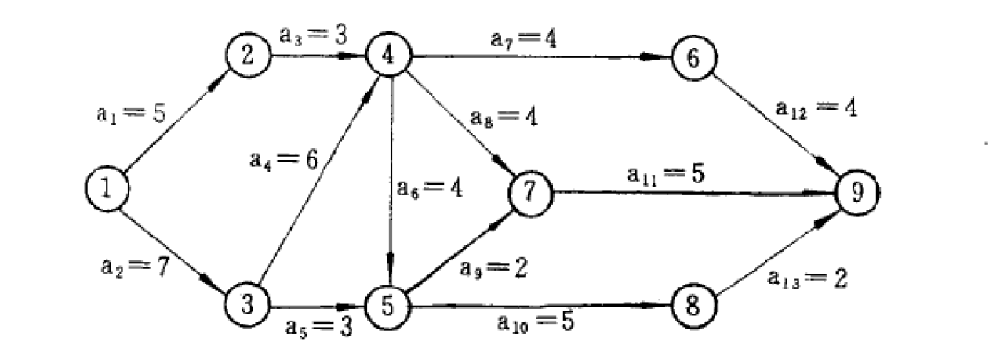
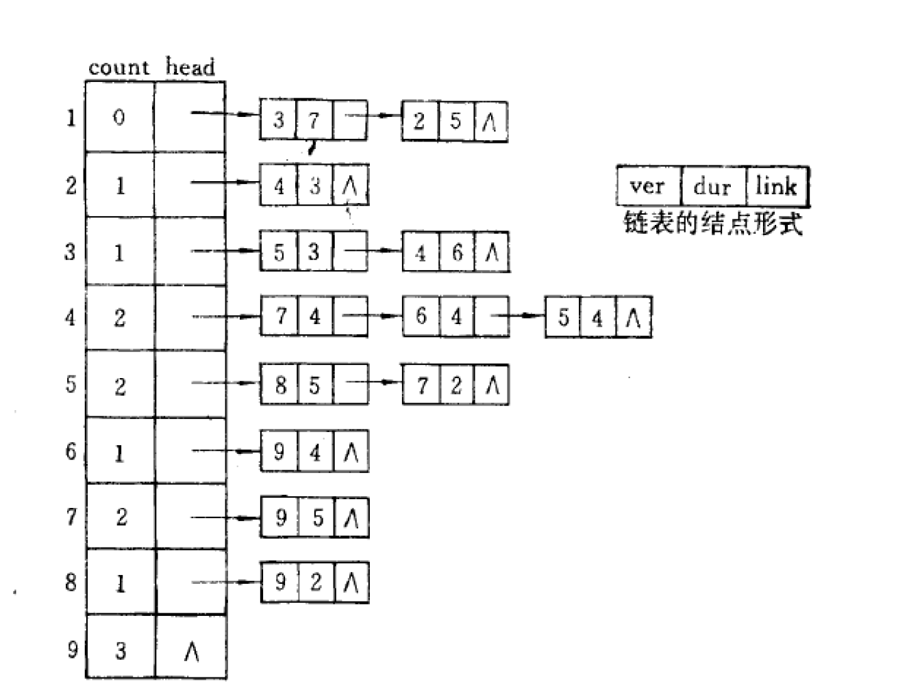
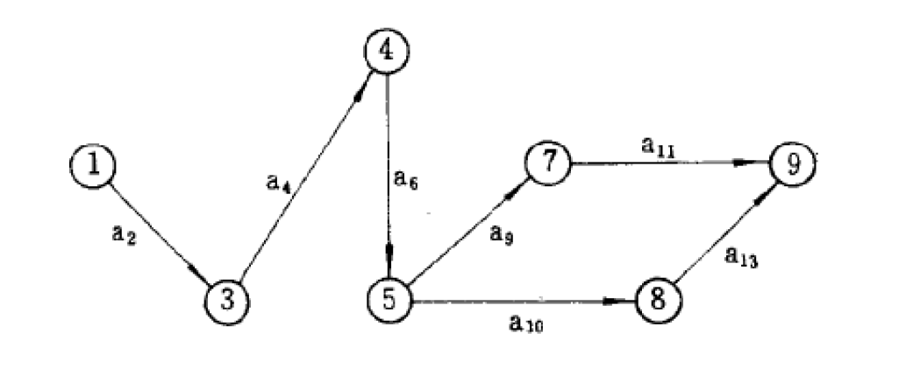

关键路径
AOE网
AOE网：Activity on edge network
若在带权的有向图中，以顶点表示事件，以有向边表示活动，边上的权值表示活动的开销（如该活动持续的时间），则此带权的有向图称为AOE网。 如果用AOE网来表示一项工程，那么，仅仅考虑各个子工程之间的优先关系还不够，更多的是关心整个工程完成的最短时间是多少；哪些活动的延期将会影响整个工程的进度，而加速这些活动是否会提高整个工程的效率。因此，通常在AOE网中列出完成预定工程计划所需要进行的活动，每个活动计划完成的时间，要发生哪些事件以及这些事件与活动之间的关系，从而可以确定该项工程是否可行，估算工程完成的时间以及确定哪些活动是影响工程进度的关键。
来自百度百科
AOE网的性质
- 只有在某顶点所代表的事件发生后，从该顶点出发的各有向边所代表的活动才能开始
- 只有在进入一某顶点的各有向边所代表的活动都已经结束，该顶点所代表的事件才能发生
AOE网中顶点代表发生的事件，而边代表活动，边的权代表活动的时间。
AOE一般用来估算工程的完成时间。
AOE表示工程的流程，把没有入边的称为始点或者源点，没有出边的顶点称为终点或者汇点。一般情况下，工程只有一个开始，一个结束，
所以正常情况下，AOE只有一个源点一个汇点。
AOV网和AOE网的比较
AOV网（Activity On Vertex Network）优先关心的是顶点，而AOE网则侧重于关心边。
AOV和AOE的区别：
-
AOV用顶点表示活动的网，描述活动之间的制约关系。
-
AOE用边表示活动的网，边上的权值表示活动持续的时间。
AOE 是建立在子过程之间的制约关系没有矛盾的基础之上，再来分析整个过程需要的时间。
关键路径的介绍
关键路径：AOE网中从源点到汇点的所有路径中，具有最大路径长度的路径。
关键活动：关键路径上的活动。
完成整个AOE网上所有工程的最短时间就是关键路径的长度，也就是关键路径上各活动花费开销的总和。
关键路径求法思路
- 事件(顶点)$v_k$的最早发生时间ve(k)
它是指从开始顶点V到$V_k$的最长路径长度，它的递推公式为
$$\begin{cases}
ve(源点)=0\
ve(k)=Max{ve(j)+Weight(v_j,v_k)}\
\end{cases}
$$
计算ve(k)时是从前往后递推的
- 事件(顶点)$v_k$的最迟发生时间vl(k)
它是指在不推迟整个工程完成的前提下，该事件最迟发生的事件，它的递推公式为
$$\begin{cases}
vl(汇点)=ve(汇点)\
vl(j)=Max{vl(k)-Weight(v_j,v_k)}\
\end{cases}
$$
计算vl(j)时是从后往前递推的
-
活动(边)$a_i$的最早发生时间e(i)
它是指该活动的起点所表示的事件的最早发生时间，计算公式:e(i)=ve(k)
-
活动(边)$a_i$的最迟发生时间l(i)
它是指该活动的起点所表示的事件的最迟发生时间，计算公式:l(i)=vl(j)-Weight($v_k,v_j$)
若一个活动的最早发生时间e(i)等于它的最迟发生时间l(i)那么它就属于关键活动，所属的路径就是关键路径。
一个工程不一定有一条关键路径，可能会有多条
实现步骤
求关键路径的算法步骤如下：
- 求AOE网中所有事件的最早发生时间ve()
- 求AOE网中所有事件的最迟发生时间vl()
- 求AOE网中所有活动的最早发生时间e()
- 求AOE网中所有活动的最迟发生时间l()
- 找出所有e等于l的活动，它们组成了关键路径
算法：
- 从源点出发，拓扑排序整个AOE网同时运用递推公式计算最早发生事件ve()。并记录其排序后位置。
- 从汇点出发，按逆拓扑排序的顺序递推最迟发生事件vl()。
- 按公式计算e()和l()，取出所有相等的活动，构成关键路径。
实例理解
如下一个AOE网

其邻接链表为

按照上面给出的思路求解即可，下面给出实现代码
1
2
3
4
5
6
7
8
9
10
11
12
13
14
15
16
17
18
19
20
21
22
23
24
25
26
27
28
29
30
31
32
33
34
35
36
37
38
39
40
41
42
43
44
45
46
47
48
49
50
51
52
53
54
55
56
57
58
59
60
61
62
63
64
65
66
67
68
69
70
71
72
73
74
75
76
77
78
79
80
81
82
83
84
85
86
87
88
89
90
91
92
93
94
95
96
97
98
99
100
101
102
103
104
105
106
107
108
109
110
111
112
113
114
| #include <stdio.h>
#include <malloc.h>
#define vex 9
#define bor 13
typedef struct vexNode{ //头结点
struct vexNode *next;
int pre;
int weight;
}vNode;
typedef struct listNode{ //表结点
struct vNode *head;
int indegree;
}lNode;
lNode node[vex];
int ve[vex]; //求顶点k最早发生时间ve[k]
int vl[vex]; //求顶点k最迟发生时间vl[k]
int topological[vex]; //拓扑排序后的序列
void create(){
int i;
int a,b,c;
vNode *p;
for(i=0;i<vex;i++){ //初始化表头信息
node[i].head=NULL;
node[i].indegree=0;
}
for(i=0;i<bor;i++){ //读入边的信息
scanf("%d%d%d",&a,&b,&c);
node[b].indegree++;
p=(vNode *)malloc(sizeof(vNode));
p->next=node[a].head;
node[a].head=p;
p->pre=b;
p->weight=c;
}
}
void topSort(){
int stack[vex];
int i,j,dut,c;
int cnt=0,k=0;
vNode *p;
for(i=0;i<vex;i++){
ve[i]=0; //初始化顶点事件最早发生时间为0
if(node[i].indegree==0){ //找所有入度为0的点
stack[cnt]=i;
cnt++;
}
}
while(cnt--){ //拓扑排序
j=cnt;
topological[k]=stack[j];
k++;
p=node[stack[j]].head;
while(p!=NULL){
dut = p->weight;
c =p->pre;
node[c].indegree--;
if(ve[topological[k-1]]+dut>ve[c]){
ve[c]=ve[topological[k-1]]+dut;
}
if(node[c].indegree==0){
stack[cnt]=c;
cnt++;
}
p=p->next;
}
}
// for(i=vex-1;i>=0;i--){
// printf("%d %d\n",ve[i],topological[i]);
// }
}
void criticalPath(){
topSort();
int i,j,k,dut;
for(i=0;i<vex;i++){
vl[i]=ve[vex-1]; //初始化顶点最迟发生时间
}
int cnt=vex; //下面按逆拓扑排序取出表结点
vNode *p;
while(--cnt!=-1){
for(j=topological[cnt],p=node[j].head;p!=NULL;p=p->next){
k=p->pre;
dut=p->weight;
if(vl[k]-dut<vl[j]){ //计算顶点的最迟发生时间
vl[j]=vl[k]-dut;
}
// printf("%d\n",vl[j]);
}
}
int e,l;
for(i=0;i<vex;i++){ //计算e和l
for(p=node[i].head;p!=NULL;p=p->next){
k=p->pre;
dut=p->weight;
e=ve[i];
l=vl[k]-dut;
if(e==l){
printf("（%d,%d）",i,k);
}
}
}
}
int main(){
// freopen("aa.txt","r",stdin);
create();
criticalPath();
return 0;
}
|
测试数据
1
2
3
4
5
6
7
8
9
10
11
12
13
| 0 1 5
0 2 7
1 3 3
2 3 6
2 4 3
3 4 4
3 5 4
3 6 4
4 6 2
4 7 5
6 8 5
5 8 4
7 8 2
|
运行结果
1
| （0,2）（2,3）（3,4）（4,7）（4,6）（6,8）（7,8）
|
最终结果：
